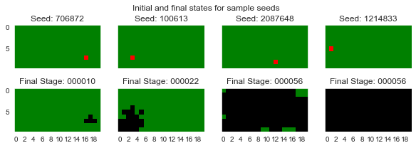

-
-
- Resources
- Forest Fire
-
Before we can use our model on real inputs we should evaluate it to determine if it is even plausible! Does it behave as one would expect? Does it depend on parameters in a manner that is consistent with expectations?
Our simulation depends on multiple parameters --- the size of the grid, the initial distribution of cell types, the fire spread and burn rates (probabilities). We need to run simulations for reasonable values of the different parameters to understand their importance/impact. Additionally, some of dependencies on parameters are stochastic so we may also need to rerun under same parameter values to estimate the effect of noise and if needed to average results over multiple runs.
Below is the order I would carry out this process and the general principles that I would follow.
First, to show that noise (randomness) is an issue, run simulation with the following parameters
\[ \begin{array}{l|cccccc} {\small\bf Parameter} & m & n & \text{fires} & w & p_{\text{ignition_rate}} & p_{\text{burnout_rate}} \\\hline {\small\bf Value} & 10 & 20 & 1 & 1/\sqrt{2} & 1.0 & 0.2 \end{array} \]
Running simulation with a sample of seeds, say
1 | |
we get significantly different behaviour

So
Task 1:
Run the simulation with the above parameters a number of times and generate the following histogram.

So what is this saying? Two distinct outcomes are dominant — either the fire burns out before it gets started, or it manages to get going and consumes most of the forest.
So how many simulations run do we need to average over? the more we use the better but the more we use the more computational effort is needed.
Task 2:
The following graph shows the average percentage damage by grouping 1000 samples points into groups of size 1, 10, 20, 50, and 100. Generate this graphic.

Conclusion:
Ignore this
For any given initial setup, the fire evolution depends on two rates/probabilities --- how easily the fire can spread to neighbouring burnable cells: \[ \Pr(\text{burnable} \to \text{burning}) \text{ depends on } p_{\text{ignition_rate}} \] and how long it takes for to burn all consumables in a burning cell: \[ \Pr(\text{burning} \to \text{burnt}) \text{ depends on } p_{\text{burnout_rate}} \]
There are some extreme cases that we can predict, such as
But what for what values do these extreme cases occur? and what happens for intermediate parameter values?
We could do a 2D parameter sweep but this is computationaly expensive so we will vary one parameter while keeping the other fixed.
Looking at both rate parameters individually, for various levels of the other rate parameter we have
Task 3:
Generate the followiing graphic.


From above diagrams we see
\[ \text{burn out rate} < \frac{\text{spread rate}}{10} \]
So what does this mean in practical terms? Well we can't modify the spread rate but we can affect the burn rate. See Prescribed burning in the southern United States for a management strategy based on limiting the amount of biomas/fuel (i.e. raising the burn rate). In a realistic situtation one would need some way to map the (observable) level of biomas to a burn rate (this is a curve fitting exercise).

For very low densities (<20%) the relationship appears to be linear, but it becomes asymptotic to the horizontal axis for larger densities.
Task 4:
Generate the above graphic.